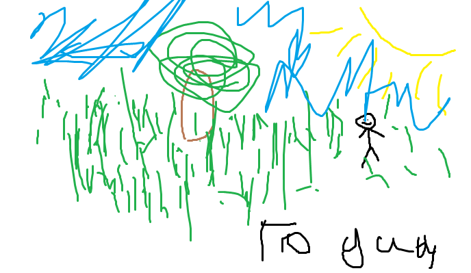
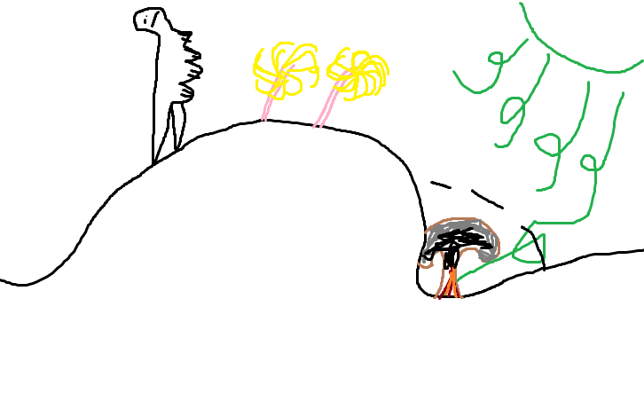

Recently scientist finally ageed on what was outside the universe
for centuries, we have lived in an enclosed area, many who leave never return.
At skibidi university they publically
mocked a professional artist, GOATGAMER21 for this depiction of the outside world

'we has rly of image no wai' said G@byG@by67_04
'stop the cap O rly touch grass or i goon with ur mom'
The data shows:
| Facts? | Correct? |
| their is a big bright thing outside? | yes. |
| Their are weird non human stuff outside? | yes. |
| their are tall things that have stuff on their tips? | yes. |
| A zombie apoclypse is happening outside? | No. |
| It can be dangerous and occasionaly things fall from the sky and explode? |
Yes, But not that often. |
- FORTNITEOG99
- user3
- Dan
The university decided that the most likely apperance of the outside world is this:

Now we don't have to listen to this properganda...
No more need for going outside...
The truth we derserve is here.
G@byG@by67_04 was awarded with the no cap metal also sold at the most popular stores.
This was debated for centuries G@byG@by67_04 really does deserve this award.
GOATGAMER21 was imprisoned for freedom of speech and using the mysterious
OS debian linux which gives the user to much power of freedom to share and learn.
We must oppress this.